Motivations
- Signalized intersection remains the major contributor for recurring congestion in our transportation network
- Most of the previous CACC studies focus on deploying CACC on freeway scenarios
- Few research efforts have been emphasized on the investigation of the impacts on managed lane for arterial deployment of CACC
Research Objectives
- To investigate the effectiveness of CACC under various managed lane strategies
- To assess the impact of market penetration rate for CACC
- To evaluate system-wide impacts of CACC on arterial mobility improvement
Research Approach
- A segment of the Fairfax County Parkway which is located in Virginia is built in Vissim as the simulation testbed
- The DriverModel.DLL and Component Object Model (COM) of Vissim are use to implement custom CACC driving behavior
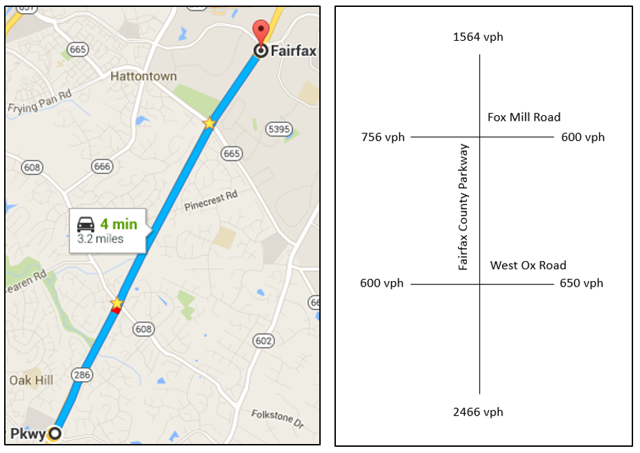
- CACC vehicle is assumed to have no start-up loss time due to V2I communication
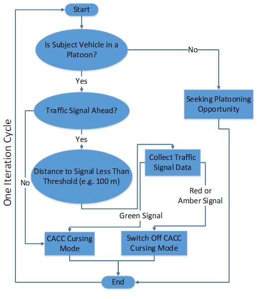
- Five different manged lane strategies were tested under various CACC market penetration
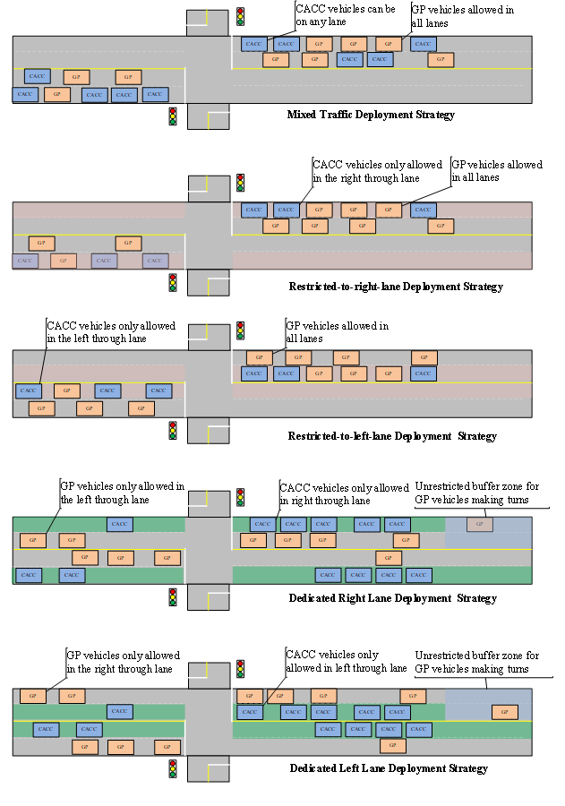Illustration of Five Managed Lane Strategies
Simulation Results
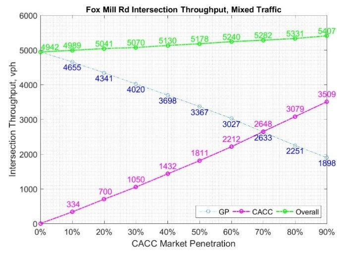Illustration of Five Managed Lane Strategies
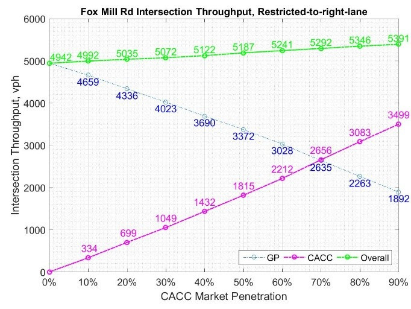Illustration of Five Managed Lane Strategies
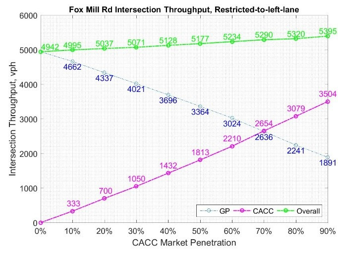Illustration of Five Managed Lane Strategies
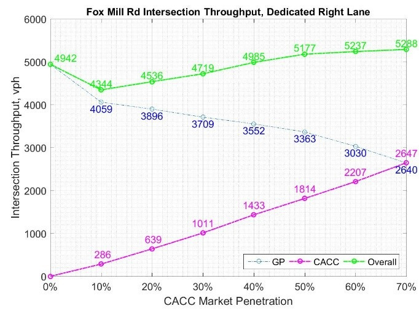Illustration of Five Managed Lane Strategies
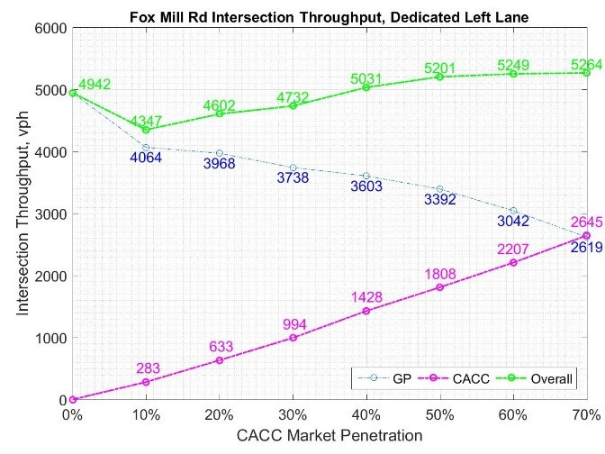Illustration of Five Managed Lane Strategies
 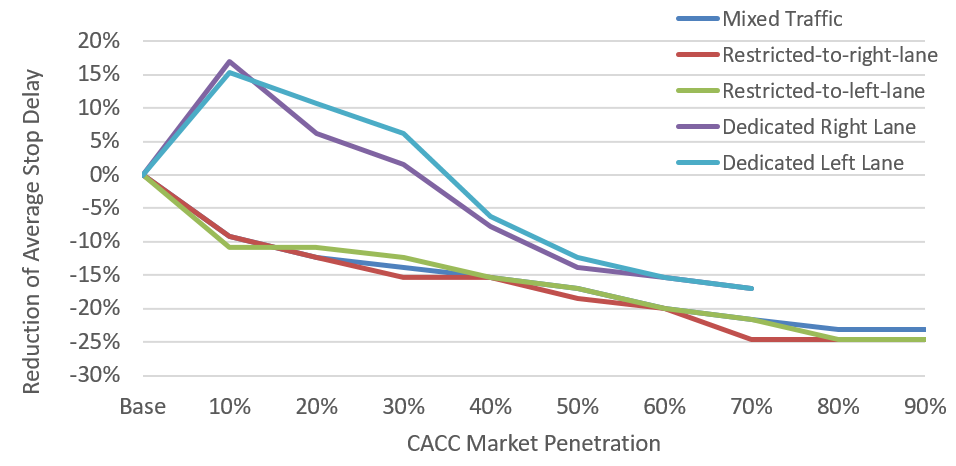
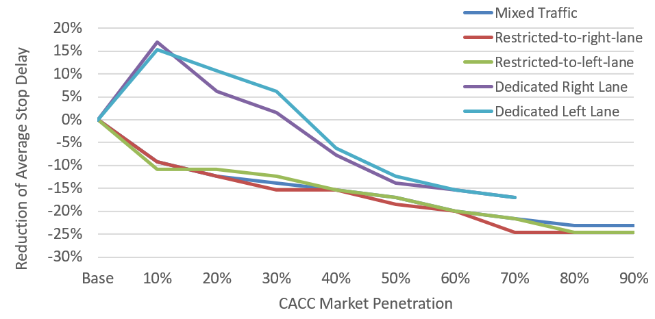
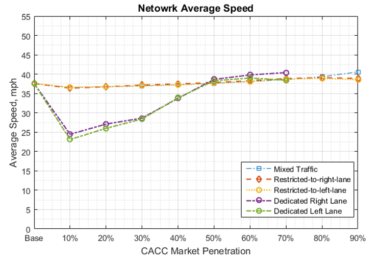
References
- Z. Zhong, J. Lee, and L. Zhao, “Evaluations of managed lane strategies for arterial deployment of cooperative adaptive cruise control,” in 96th Transportation Research Board Annual Meeting, 2017